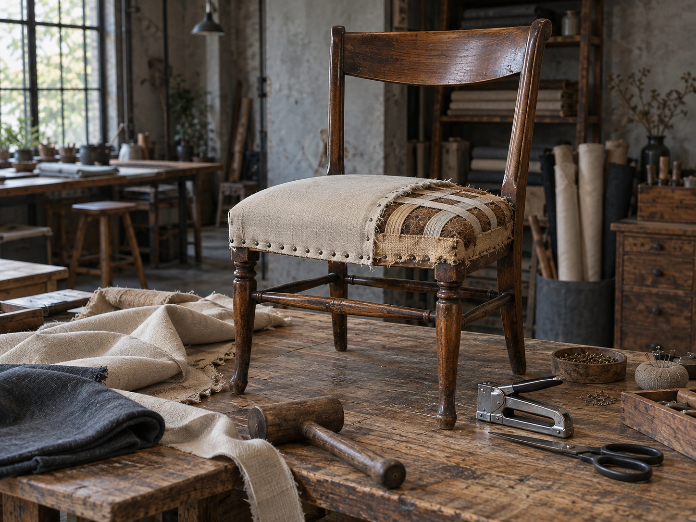

CONCEPT
「椅子と珈琲」の、
椅子のほうが本業です
雲の巣は、秋田市土崎港北の旧道沿いにあります。2024年6月に開店しました。 道路から見ると、倉庫にしか見えない建物です。
椅子と珈琲 ＝ 店主の仕事と、お店の仕事
店主は椅子張りの職人です。お店には椅子の工房が併設されていて、店内に並ぶ椅子は店主が修理したもの。購入することもできます。
店主は、秋田木工での勤務ののち、京都と仙台で椅子張りの修行をして、2017年に秋田で独立。 2021年に土崎に作業場を作り、その3年後、隣で喫茶店を始めました。 建物は、もとは鉄工所だったと紹介されています。
椅子を直す人が、その椅子に座ってもらうための場所を作った。 店名の「椅子」が先に来ているのは、そういう順番だからだと受け取りました。
